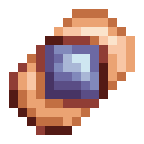
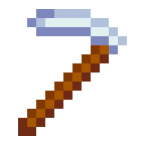
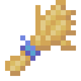

Test Seed
"Placeholder" ->
"Nasiono, które było użyte do testowania... farm..? Nie mam pojęcia o czym ty mówisz."
Test Crop
"Placeholder" ->
"Plon, który wyrasta z Test Seed. W jaki sposób ktoś może na coś takiego wpaść?"
Motyka
"Placeholder" ->
"Narzędzie używane, aby przygotować Ziemię na nasiona. Jest stworzona z Drewna, Żelana i odrobiny Złota."
Konewka
"Placeholder" ->
"Po wypełnieniu wodą, może być użyta do nawodnienia pól. Przydatna, aby utrzymać rośliny przy życiu."
Nawóz
"Placeholder" ->
"Magiczny proszek, który chroni rośliny i pomaga im rosnąć. Jego właściwości w większości pochodzą z Różowej Esencji."
Nasiona Pszenicy
"Placeholder" ->
"Nasiono, z którego wyrasta Pszenica. Jest bardzo powszechne i można je znaleźć w wielu miejscach."
Pszenica
"Placeholder" ->
"Jedna z najbardziej powszechnych roślin. Jest głównym źródłem jedzenia w Imperium Semerskim."
Test Seed

Test Crop
Motyka

Konewka
Nawóz
Nasiona Pszenicy
Pszenica

Test Bundle
➕ 1 Test Seed
➕ 1 Test Crop
Zaktualizowano nagrody za żebranie.
🔻 Chleb 12,5% -> 2,5%
➕ 1 Pszenica 10%
Dziura
Zaktualizowano Skarb:
➕ Pszenica 1-2 30%
Od teraz komenda wyświetla informacje o nasionach.
Las
🔻 Jabłko 14,9% -> 9,9%
➕ 1 Pszenica 5% 1-2 XP
Kusel Skaard
Stara Oferta:
| Cena | Przedmiot |
| 15 Fragment Metalu | 1 Pochodnia |
| 10 Żelazo | 5 Drewno |
| 1 Żelazny Miecz | 10 Szkło |
| 1 Żelazny Kilof | 1 Chleb |
| 20 Ruda Żelaza | 1 Banknot |
| 3 Młotek | 1 Jabłko |
Nowa Oferta
| Cena | Przedmiot |
| 15 Fragment Metalu | 1 Pochodnia |
| 5 Banknot | 1 Nasiona Pszenicy |
| 1 Żelazny Miecz | 10 Szkło |
| 1 Żelazny Kilof | 1 Chleb |
| 20 Ruda Żelaza | 1 Banknot |
| 10 Żelazo | 5 Drewno |
Dodano 2 nowe zadania dzienne związane z rolnictwem. Wszystkie zadania są dostępne tutaj.
Dodano wsparcie dla liczników globalnych w wydarzeniach. Liczniki zliczają ile dany użytkownik zwiększył licznik. Przechowują również informacje o nagrodach za osiągnięcie danych kamieni milowych oraz o nagrodach dla osób, które najbardziej wzniosły dany licznik.